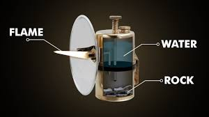

Chemical Principle: These lamps work by dripping water onto calcium carbide,
causing a chemical reaction. This reaction produces acetylene gas, which burns with a clean, bright
flame.
Design: Typically when made they have two seperate chambers, an upper one for
water,
and a lower for the carbide. The gas that's produced is directed through a nozzle and ignited using
flint and steel at
a reflector tip.

Inventor: Frederick Baldwin first patented the carbide mining lamp in 1900.
Short Video on how Carbide Lamp's Work:
Uses of Carbide Lamps:
Mining: Worn on helmets or carried by hand, these lamps became the dominant
underground light from
1914 onwards.
Other Applications: Used in lighthouses, as bicycle headlights, even early
automobile lamps, and homes.
Modern Niche Uses: Still favored by cavers and explorers for their reliability and
long burn time.
Efficiency Gains for Industrial Use:
Upgrade from Candle/Oil Lamps:
Brightness: Produced a much stronger, whiter flame, illuminating larger areas.
Duration: A charge of carbide could last several hours, which would reduce
downtime for relighting.
Safety: Less smoke and soot, lowering respiratory hazards and improving
visibility.
Impact on Productivity: Better lighting meant miners could work faster and more
safely, reducing accidents and increasing output.
Cost-Effectiveness: Calcium carbide was relatively cheap, and our lamps are made to
be very durable, making them economical for
companies.